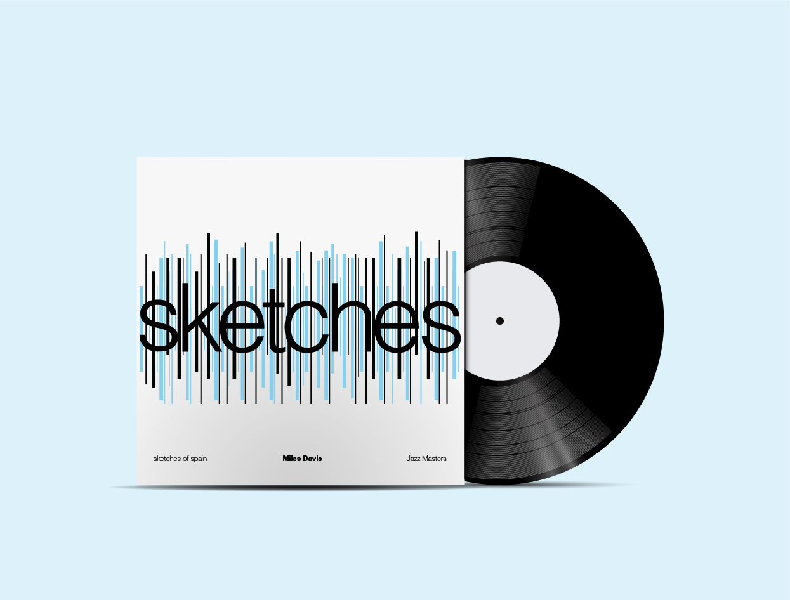
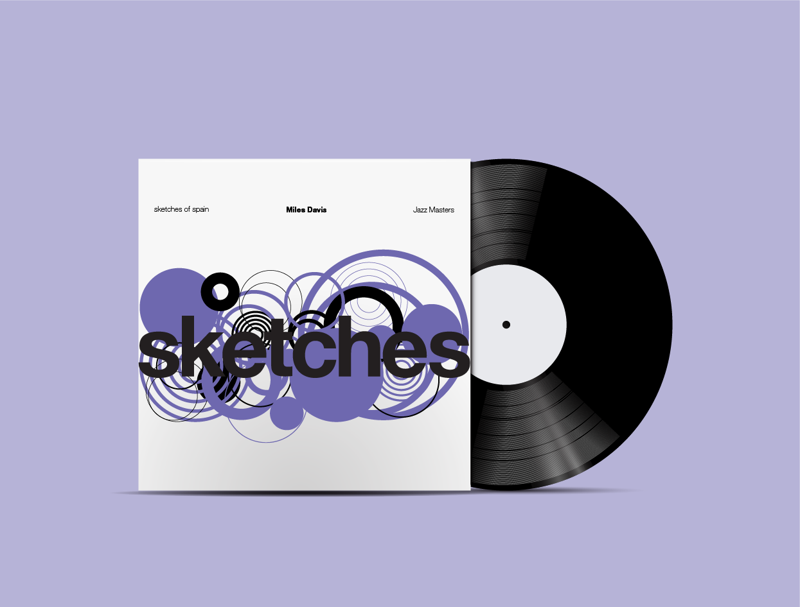
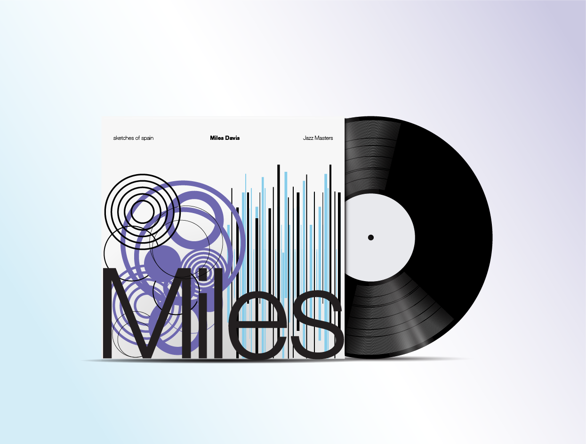

EXPERIMENTAL TYPOGRAPHY
An experimental typographic study exploring rhythm, distortion, layering, and emotional composition.

This project examines typography as a spatial and emotional tool rather than purely informational content. The compositions were developed through repetition, contrast, fragmentation, and movement to create tension between readability and expression. Influenced by editorial systems and experimental poster design, the work explores how visual rhythm can shape feeling, memory, and attention within a composition.

